Note
Go to the end to download the full example code.
Fundamentals of DSS.#
This tutorial introduces Denoising Source Separation (DSS), a technique for extracting brain sources based on a specific criterion of “interestingness” (bias).
Unlike PCA, which finds components of high variance, or ICA, which finds components of high non-Gaussianity, DSS finds components that maximize a user-defined Bias.
The core optimization is:
where: * $R_{biased}$ is the covariance of the “signal of interest” (biased data). * $R_{baseline}$ is the covariance of the raw data (or noise).
This allows DSS to be extremely flexible. The “Bias” defines what you are looking for. Typical biases include: * Trial Averaging: Finds stimulus-evoked responses (reproducible across trials). * Bandpass Filtering: Finds oscillatory sources (alpha, beta, etc.). * Time Masking: Finds artifacts (blinks, heartbeats) to remove them.
This tutorial demonstrates the “Hello World” of DSS: extracting a repetitive signal buried in noise using the Trial Average Bias.
- Authors: Sina Esmaeili (sina.esmaeili@umontreal.ca)
Hamza Abdelhedi (hamza.abdelhedi@umontreal.ca)
Imports#
import contextlib
import os
import mne
import numpy as np
from mne.datasets import sample
from mne_denoise.dss import DSS, AverageBias, BandpassBias
from mne_denoise.viz import (
plot_component_summary,
plot_component_time_series,
plot_evoked_comparison,
plot_psd_comparison,
plot_score_curve,
plot_spatial_patterns,
)
Part 1: Synthetic Data#
We generate synthetic data with distinct components to demonstrate different biases. * Signal A (Evoked): 10 Hz sine wave, phase-locked (reproducible). * Signal B (Oscillatory): 50 Hz, random phase (not reproducible, but distinct frequency). * Noise: White noise.
print("Generating synthetic data...")
n_epochs = 50
n_times = 500
n_channels = 32
sfreq = 250
times = np.arange(n_times) / sfreq
data = np.zeros((n_epochs, n_channels, n_times))
# Create standard montage for realistic topomaps
montage = mne.channels.make_standard_montage("standard_1020")
ch_names = montage.ch_names[:n_channels]
info = mne.create_info(ch_names, sfreq, "eeg")
info.set_montage(montage)
# Generate smooth spatial patterns (dipole-like)
# This fixes the "noisy topomap" issue by ensuring adjacent sensors have similar weights.
pos = np.array([ch["loc"][:3] for ch in info["chs"]])
center_head = np.mean(pos, axis=0)
# Pattern 1: Left-ish
target_pos_1 = center_head + np.array([-0.05, 0, 0])
dists_1 = np.linalg.norm(pos - target_pos_1, axis=1)
mixing_evoked = np.exp(-(dists_1**2) / 0.02)
mixing_evoked /= np.linalg.norm(mixing_evoked)
# Pattern 2: Right-ish
target_pos_2 = center_head + np.array([0.05, 0, 0.05])
dists_2 = np.linalg.norm(pos - target_pos_2, axis=1)
mixing_osc = np.exp(-(dists_2**2) / 0.02)
mixing_osc /= np.linalg.norm(mixing_osc)
rng = np.random.default_rng(42)
# Generate spatially correlated noise (Background Activity)
# Random dipoles to ensure noise has smooth topography (like real brain data)
n_noise_sources = 20
noise_mix = np.zeros((n_channels, n_noise_sources))
for k in range(n_noise_sources):
# Random target position
rand_pos = center_head + rng.uniform(-0.06, 0.06, 3)
dists = np.linalg.norm(pos - rand_pos, axis=1)
# Smooth spatial field
field = np.exp(-(dists**2) / 0.015)
noise_mix[:, k] = field / np.linalg.norm(field)
for i in range(n_epochs):
# 1. Evoked Signal (10 Hz, reproducible)
signal_evoked = np.sin(2 * np.pi * 10 * times) * 2.0
# 2. Oscillatory interference (50 Hz, random phase)
# We also give this a smooth topography (Oscillator pattern)
phase = rng.uniform(0, 2 * np.pi)
signal_osc = np.sin(2 * np.pi * 50 * times + phase) * 1.5
# 3. Background Brain Noise (Spatially Smooth)
noise_src = rng.standard_normal((n_noise_sources, n_times))
brain_noise = noise_mix @ noise_src * 0.5
# 4. Sensor Noise (White, small)
sensor_noise = rng.standard_normal((n_channels, n_times)) * 0.1
# Combine
data[i] = (
np.outer(mixing_evoked, signal_evoked)
+ np.outer(mixing_osc, signal_osc)
+ brain_noise
+ sensor_noise
)
epochs = mne.EpochsArray(data, info)
print(f"Created epochs: {epochs.get_data().shape}")
Generating synthetic data...
Not setting metadata
50 matching events found
No baseline correction applied
0 projection items activated
Created epochs: (50, 32, 500)
Synthetic A: Trial Average Bias#
Goal: Isolate the Evoked (10Hz) component. Bias: Maximize power of the mean over epochs.
print("\n--- Synthetic: Trial Average Bias ---")
dss_evoked = DSS(n_components=3, bias=AverageBias(), return_type="sources")
dss_evoked.fit(epochs)
# Visualize
# 1. Score Curve
# --------------
# This plot shows the "Bias Ratio" for each component.
# * **Expectation**: The first component (Comp 0) should have a much higher score than the rest.
# * This indicates that Comp 0 is highly reproducible (signal), while others are noise.
plot_score_curve(dss_evoked, mode="ratio", show=False)
# 2. Component Time Series
# ------------------------
# We view the time courses of the first 5 components.
# * **Expectation**: Comp 0 should look like a clean 10 Hz sine wave.
# * **Expectation**: Comp 1-4 should look like noise or the 50 Hz interference.
plot_component_time_series(dss_evoked, data=epochs, n_components=3, show=False)
# 3. Spatial Patterns
# -------------------
# The "Spatial Pattern" (or topomap) shows how the component maps onto the sensors.
#
# * **Interpretation**:
# * **Colors**: Red/Blue indicate opposite polarity. Strong colors mean the component
# is strongly present on those sensors.
# * **Dots**: These represent the 32 electrodes of the 'standard_1020' montage.
# * **Comp 0**: Shows a smooth dipolar field (the "Left-ish" pattern we simulated).
# * **Comp 1+**: Often look "speckled" or messy, indicating they capture noise.
#
# Note: Since the data is synthetic, the sensor locations are idealized.
plot_spatial_patterns(dss_evoked, n_components=3, show=False)
# 4. Component Summary
# --------------------
# A dashboard for detailed inspection of Comp 0.
plot_component_summary(dss_evoked, data=epochs, n_components=[0], show=False)
# 5. Denoising Comparison
# -----------------------
# We reconstruct the data using ONLY the first component (the "Signal").
# This removes the 50Hz interference and white noise.
print("Reconstructing data from first component...")
sources = dss_evoked.transform(epochs)
# To reconstruct using only specific components, we zero out the others
sources[1:, :, :] = 0
epochs_denoised = dss_evoked.inverse_transform(sources)
epochs_denoised = mne.EpochsArray(epochs_denoised, info)
# Plot Original vs Denoised Evoked Response
# * **Expectation**: The "Denoised" trace should have smaller confidence intervals (shaded area)
# because the variable noise has been removed.
plot_evoked_comparison(epochs, epochs_denoised, show=True)

- 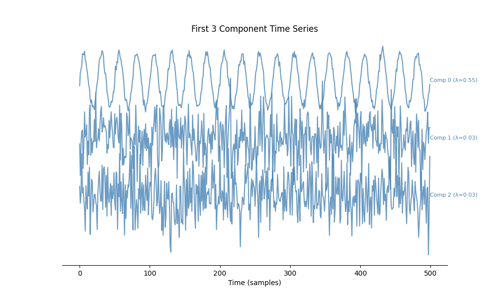
- 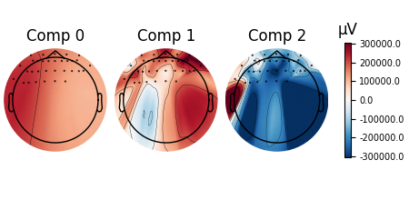
- 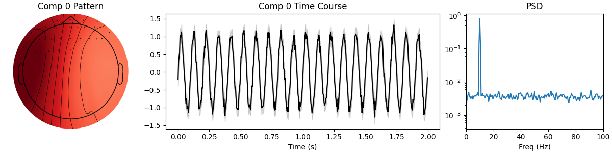
- 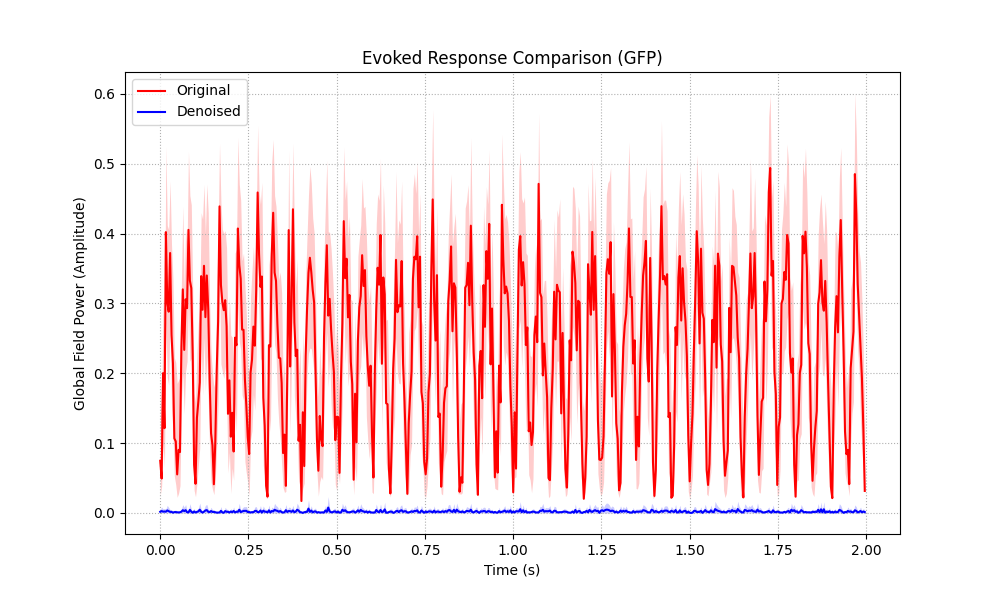
--- Synthetic: Trial Average Bias ---
/home/runner/work/mne-denoise/mne-denoise/mne_denoise/dss/linear.py:492: RuntimeWarning: Epochs are not baseline corrected, covariance matrix may be inaccurate
baseline_cov = mne.compute_covariance(inst, method=method, **kws)
/home/runner/work/mne-denoise/mne-denoise/mne_denoise/dss/linear.py:494: RuntimeWarning: Epochs are not baseline corrected, covariance matrix may be inaccurate
biased_cov = mne.compute_covariance(biased_inst, method=method, **kws)
Reconstructing data from first component...
Not setting metadata
50 matching events found
No baseline correction applied
0 projection items activated
<Figure size 1000x600 with 1 Axes>
Synthetic B: Bandpass Bias#
Goal: Isolate the Oscillatory (50Hz) component. Note: This component cancels out in the trial average! But DSS can find it by maximizing 50Hz power. Bias: Maximize power in 48-52 Hz band.
print("\n--- Synthetic: Bandpass Bias (50Hz) ---")
bias_bp = BandpassBias(freq_band=(48, 52), sfreq=sfreq)
dss_osc = DSS(n_components=5, bias=bias_bp)
# For Bandpass, we often treat data as continuous (Raw), but Epochs work too (concatenated).
dss_osc.fit(epochs)
# Visualize
# 1. Score Curve
plot_score_curve(dss_osc, mode="ratio", show=False)
# 2. Component Time Series
# * **Expectation**: Comp 0 should look like a bursty/clean 50Hz oscillation.
# * **Note**: Unlike Evoked, these are not phase-locked, so peaks don't align across trials.
plot_component_time_series(dss_osc, data=epochs, n_components=3, show=False)
# 3. Spatial Patterns
# * **Expectation**: Comp 0 should show the "Right-ish" field pattern.
# * **Note**: This topography is distinct from the Evoked signal, showing how DSS separates sources spatially.
plot_spatial_patterns(dss_osc, n_components=3, show=False)
# 4. Component Summary
# * **Expectation**: PSD should show a very sharp peak at 50 Hz.
plot_component_summary(dss_osc, data=epochs, n_components=[0], show=False)
# 5. Denoising Comparison
# -----------------------
# Reconstruct data using the oscillator component.
print("Reconstructing data from oscillatory component...")
# We concatenate epochs for continuous reconstruction if desired, or keep as epochs
# Here we keep as epochs to use plot_psd_comparison
sources = dss_osc.transform(epochs)
sources[1:, :, :] = 0
epochs_osc = dss_osc.inverse_transform(sources)
epochs_osc = mne.EpochsArray(epochs_osc, info)
# Plot PSD Comparison
# * **Expectation**: The "Denoised" signal should have a massive peak at 50Hz
# and very little power elsewhere (noise suppressed).
plot_psd_comparison(epochs, epochs_osc, show=True, fmax=100)
- 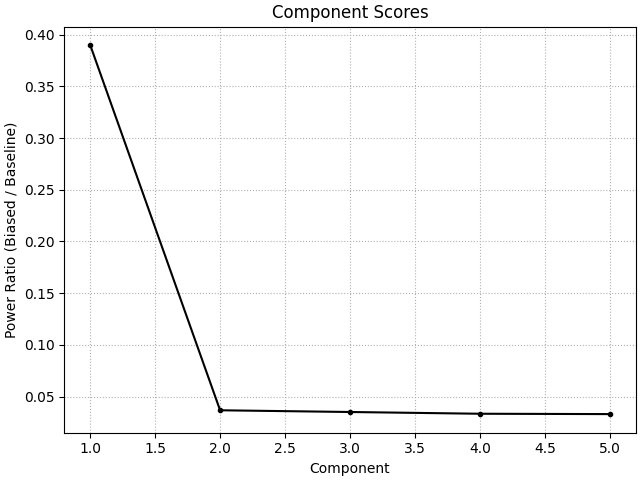
- 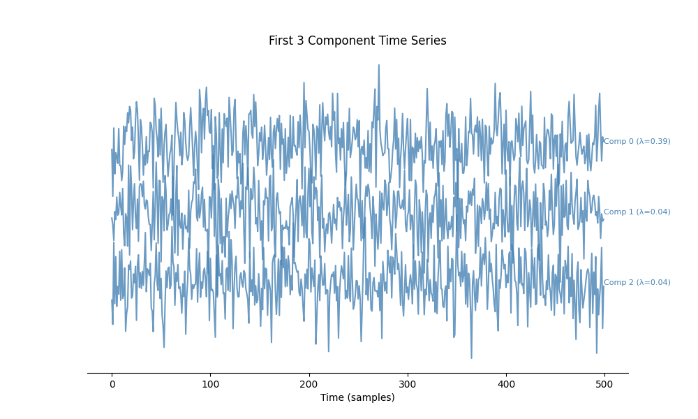
- 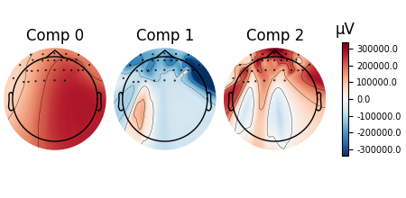
- 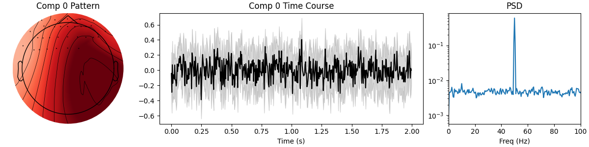
- 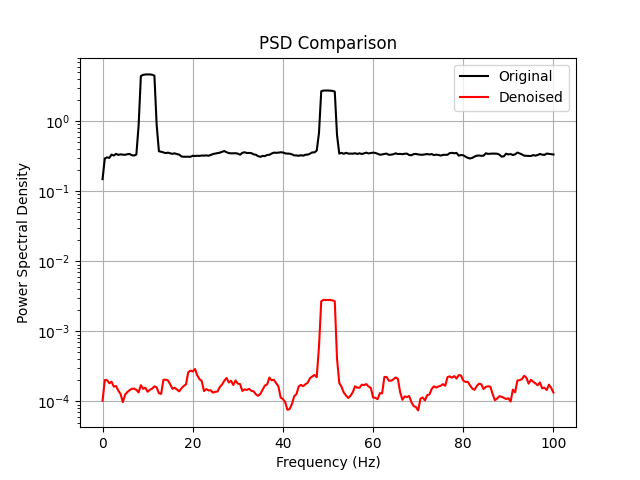
--- Synthetic: Bandpass Bias (50Hz) ---
/home/runner/work/mne-denoise/mne-denoise/mne_denoise/dss/linear.py:492: RuntimeWarning: Epochs are not baseline corrected, covariance matrix may be inaccurate
baseline_cov = mne.compute_covariance(inst, method=method, **kws)
/home/runner/work/mne-denoise/mne-denoise/mne_denoise/dss/linear.py:494: RuntimeWarning: Epochs are not baseline corrected, covariance matrix may be inaccurate
biased_cov = mne.compute_covariance(biased_inst, method=method, **kws)
Reconstructing data from oscillatory component...
Not setting metadata
50 matching events found
No baseline correction applied
0 projection items activated
Using multitaper spectrum estimation with 7 DPSS windows
Using multitaper spectrum estimation with 7 DPSS windows
/home/runner/work/mne-denoise/mne-denoise/mne_denoise/viz/comparison.py:48: UserWarning: Zero value in spectrum for channels Fp1, Fpz, Fp2, AF9, AF7, AF5, AF3, AF1, AFz, AF2, AF4, AF6, AF8, AF10, F9, F7, F5, F3, F1, Fz, F2, F4, F6, F8, F10, FT9, FT7, FC5, FC3, FC1, FCz, FC2
spectrum = inst.compute_psd(fmin=fmin, fmax=fmax)
<Figure size 640x480 with 1 Axes>
Part 2: Real Data (MNE Sample)#
We load real MEG data and perform the same two tasks: 1. Trial Average Bias: Recover auditory evoked response (M100). 2. Bandpass Bias: Recover Alpha rhythm (8-12 Hz) from background.
print("\nLoading MNE Sample data...")
# Ensure MNE_DATA directory exists
home = os.path.expanduser("~")
mne_data_path = os.path.join(home, "mne_data")
if not os.path.exists(mne_data_path):
with contextlib.suppress(OSError):
os.makedirs(mne_data_path)
data_path = sample.data_path()
raw_fname = data_path / "MEG" / "sample" / "sample_audvis_raw.fif"
event_fname = data_path / "MEG" / "sample" / "sample_audvis_raw-eve.fif"
raw = mne.io.read_raw_fif(raw_fname, preload=True, verbose=False)
raw.pick_types(meg="grad", eeg=False, eog=False, stim=False).crop(0, 60)
print(f"Data: {len(raw.ch_names)} Gradiometers, 60s duration")
Loading MNE Sample data...
NOTE: pick_types() is a legacy function. New code should use inst.pick(...).
Data: 203 Gradiometers, 60s duration
Real A: Bandpass Bias (Alpha Rhythm)#
Goal: Find Alpha (8-12 Hz) components.
print("\n--- Real: Bandpass Bias (Alpha) ---")
bias_alpha = BandpassBias(freq_band=(8, 12), sfreq=raw.info["sfreq"])
dss_alpha = DSS(n_components=5, bias=bias_alpha)
dss_alpha.fit(raw)
# Visualize
# 1. Score Curve
plot_score_curve(dss_alpha, mode="ratio", show=False)
# 2. Component Time Series
# * **Expectation**: Strong rhythmic activity (alpha waves) in the first component.
plot_component_time_series(dss_alpha, data=raw, n_components=5, show=False)
# 3. Spatial Patterns
# * **Expectation**: Comp 0 shows a posterior/occipital topography (visual/alpha areas).
# * **Note**: The dots here represent the MEG sensors (gradiometers).
plot_spatial_patterns(dss_alpha, n_components=5, show=False)
# 4. Component Summary
# * **Expectation**: PSD peak in 8-12 Hz range.
plot_component_summary(dss_alpha, data=raw, n_components=[0], show=False)
# 5. Denoising Comparison
print("Reconstructing Alpha component...")
sources_alpha = dss_alpha.transform(raw)
sources_alpha[1:, :] = 0
raw_alpha = dss_alpha.inverse_transform(sources_alpha)
raw_alpha = mne.io.RawArray(raw_alpha, raw.info)
# Compare PSDs
# * **Expectation**: Denoised signal roughly follows original in alpha band but has lower noise floor.
plot_psd_comparison(raw, raw_alpha, fmax=40, show=True)
- 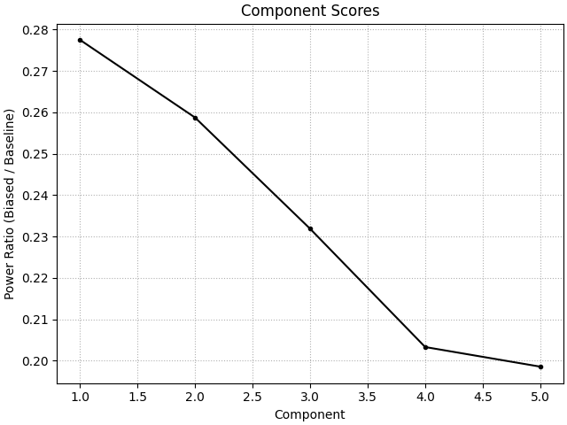

- 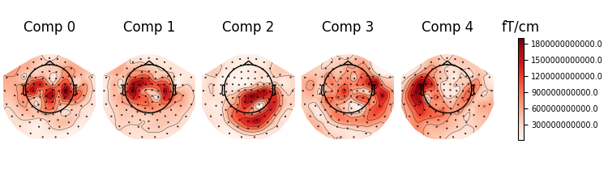
- 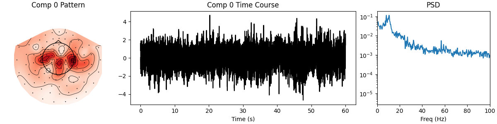
- 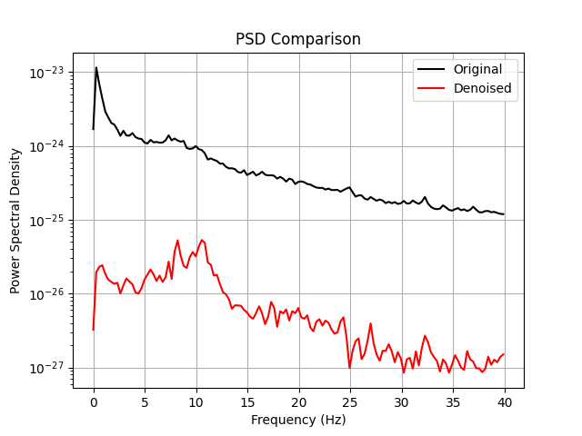
--- Real: Bandpass Bias (Alpha) ---
Reconstructing Alpha component...
Creating RawArray with float64 data, n_channels=203, n_times=36038
Range : 0 ... 36037 = 0.000 ... 60.000 secs
Ready.
Effective window size : 3.410 (s)
Effective window size : 3.410 (s)
<Figure size 640x480 with 1 Axes>
Real B: Trial Average Bias (Auditory Evoked)#
Goal: Find the M100 auditory response. We first need to epoch the data around auditory events.
print("\n--- Real: Trial Average Bias (M100) ---")
events = mne.read_events(event_fname)
# Event ID 1 = Auditory/Left
epochs_real = mne.Epochs(
raw,
events,
event_id=1,
tmin=-0.1,
tmax=0.4,
baseline=(None, 0),
preload=True,
verbose=False,
)
print(f"Epochs extracted: {len(epochs_real)}")
dss_m100 = DSS(n_components=5, bias=AverageBias())
dss_m100.fit(epochs_real)
# Visualize
# 1. Score Curve
plot_score_curve(dss_m100, mode="ratio", show=False)
# 2. Component Time Series
# * **Expectation**: Comp 0 should show a clear evoked potential (M100) that is
# visible even in the stacked single trials (if SNR is good enough) or at least in the mean.
plot_component_time_series(dss_m100, data=epochs_real, n_components=5, show=False)
# 3. Spatial Patterns
# * **Expectation**: Dipolar pattern over auditory cortex (temporal lobes).
# * **Observation**: You might see symmetric dipoles over left and right temporal areas.
plot_spatial_patterns(dss_m100, n_components=5, show=False)
# 4. Summary
plot_component_summary(dss_m100, data=epochs_real, n_components=[0], show=False)
# 5. Denoising Comparison
print("Reconstructing M100 component...")
sources = dss_m100.transform(epochs_real)
sources[1:, :, :] = 0
epochs_m100 = dss_m100.inverse_transform(sources)
epochs_m100 = mne.EpochsArray(epochs_m100, epochs_real.info)
# Compare Evoked Responses
# * **Expectation**: Cleaner M100 peak with reduced baseline noise.
plot_evoked_comparison(epochs_real, epochs_m100, show=True)
- 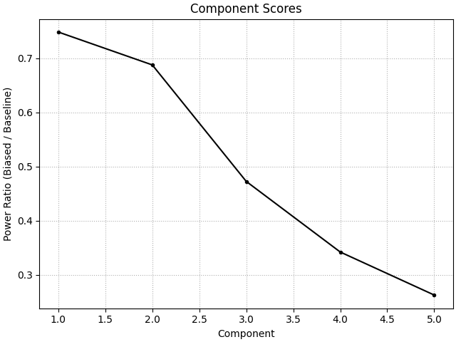
- 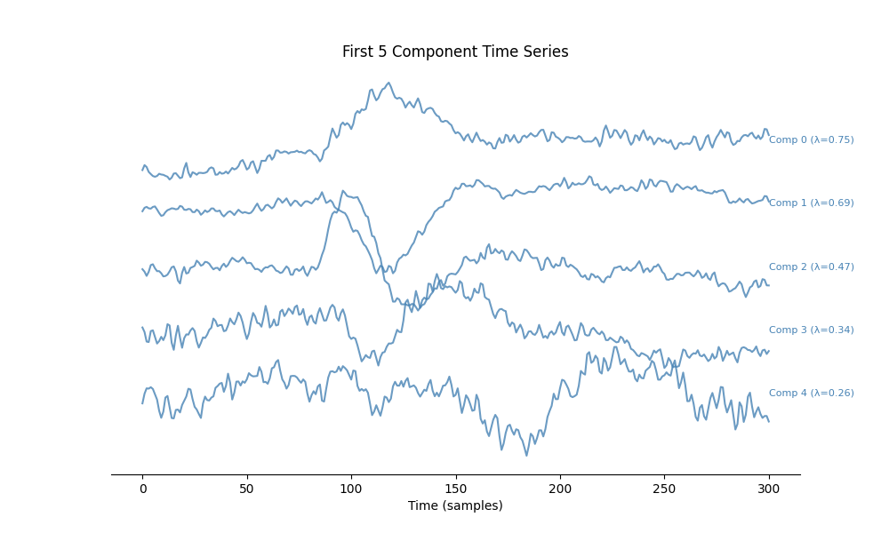
- 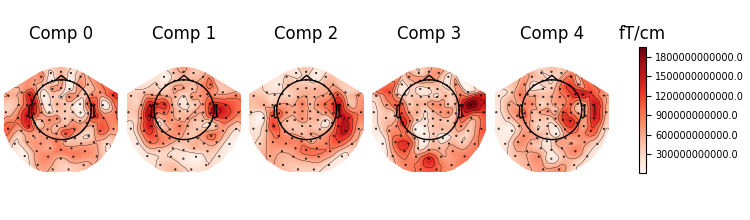
- 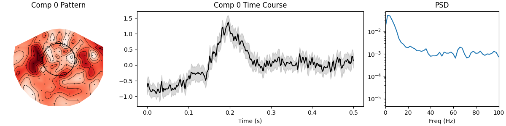
- 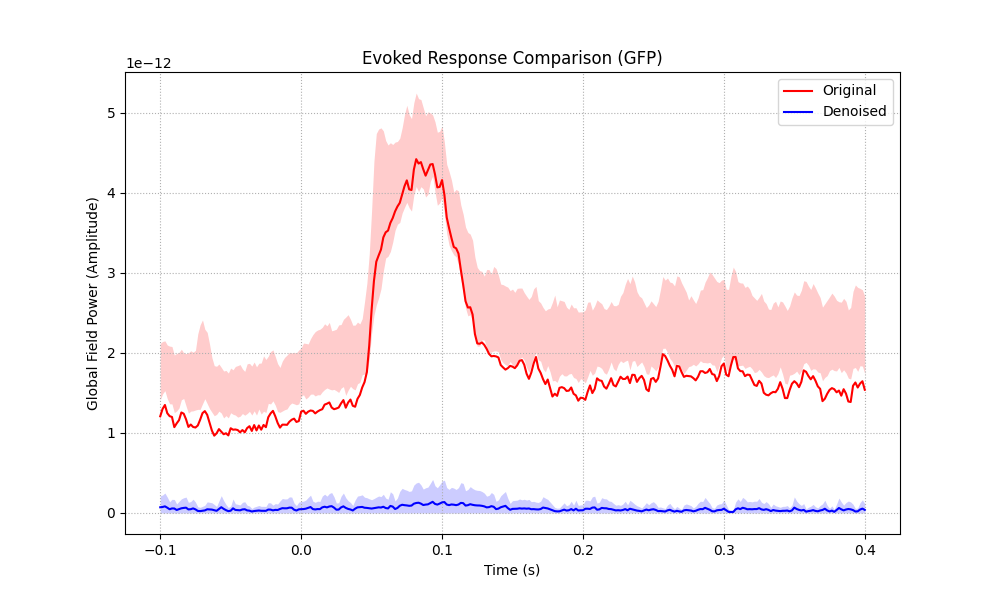
--- Real: Trial Average Bias (M100) ---
Epochs extracted: 20
/home/runner/work/mne-denoise/mne-denoise/mne_denoise/dss/linear.py:492: RuntimeWarning: Epochs are not baseline corrected, covariance matrix may be inaccurate
baseline_cov = mne.compute_covariance(inst, method=method, **kws)
/home/runner/work/mne-denoise/mne-denoise/mne_denoise/dss/linear.py:494: RuntimeWarning: Epochs are not baseline corrected, covariance matrix may be inaccurate
biased_cov = mne.compute_covariance(biased_inst, method=method, **kws)
Reconstructing M100 component...
Not setting metadata
20 matching events found
No baseline correction applied
0 projection items activated
<Figure size 1000x600 with 1 Axes>
Conclusion#
We successfully demonstrated the flexibility of DSS: * AverageBias: Found phase-locked signals (Sine wave, M100) by averaging. * BandpassBias: Found induced/oscillatory signals (50Hz, Alpha) by filtering.
The same algorithm, DSS, solved both problems simply by changing the definition of “interesting”.
Total running time of the script: (0 minutes 10.648 seconds)